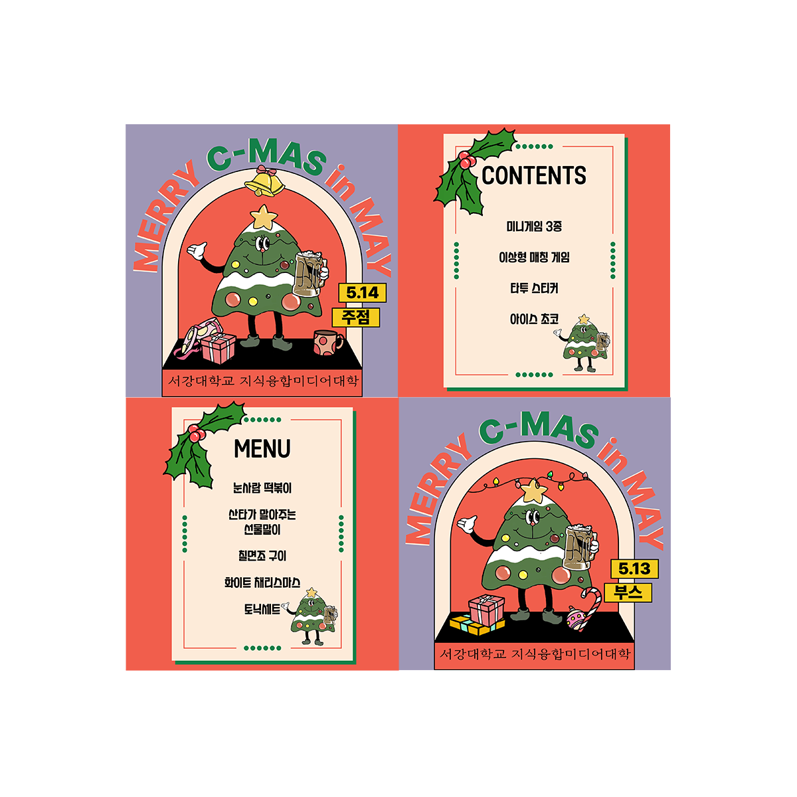
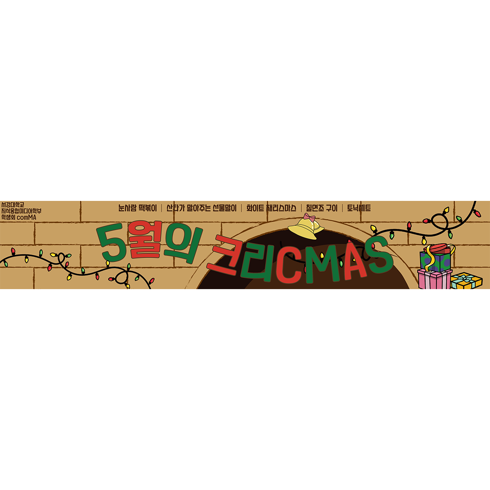
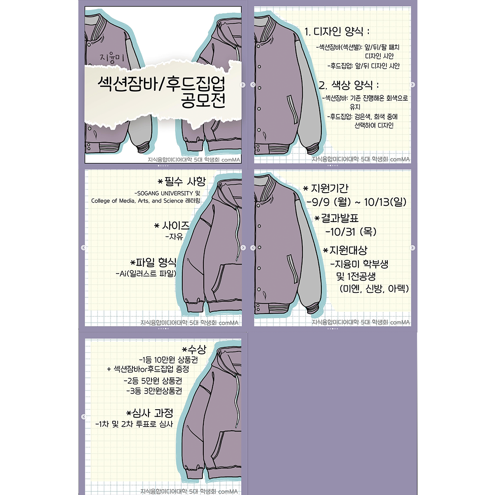

Visual Design1
I created an Instagram card news to promote the MT event
of the College of Media, Arts and Science.

Visual Design2
I created an Instagram card news to promote
the College of Media, Arts and Science's May festival concept,
'May's Chri-CMAS.' To highlight the Christmas theme,
I designed it using elements that evoke the essence of Christmas.

Visual Design3
I designed a banner to be used at the pub for
the May festival concept,
'May's Chri-CMAS'

Hoodie Design Contest' event hosted by the College
of Knowledge Convergence and Media.
of the College of Knowledge Convergence and Media at
the September festival, CARDINAL, which was themed
'Autumn Baseball - CBO (Cmas Baseball Organization).
The main colors were chosen to be shades of orange and blue,
and I created a sense of unity with curved lines and
irregular straight lines. To avoid monotony, the arrangement
and placement of these elements were slightly varied on each page.
A noise effect was added to bring visual harmony.
designed to highlight the core concept and the portfolio's title,
'SEQUENCE.' The typography blends digital fonts
with handwritten elements to reflect the portfolio's unique
combination of digital and physical art.